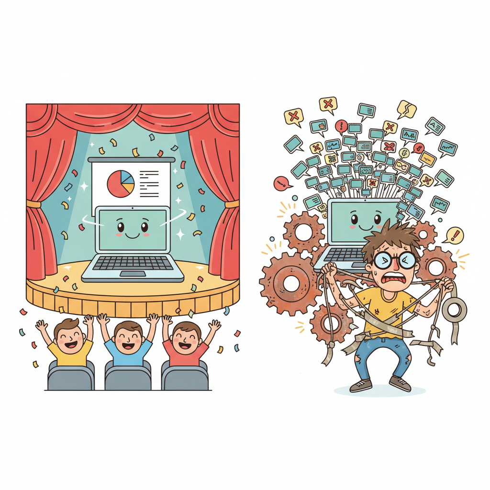

"The demo took three hours to build. The product took three years. The difference? The demo only had to work once."
Deploy The Production Realist
Prerequisites
This section assumes familiarity with LLM API patterns from Chapter 10, prompt engineering from Chapter 11, and the basics of AI agents from Chapter 22. Readers who have also covered evaluation (Chapter 29) and production engineering (Chapter 31) will find the cross-references especially useful.
AI products are fundamentally different from traditional software. Traditional software is deterministic: given the same input, you get the same output, every time. AI products are probabilistic, context-dependent, and shaped by data that shifts over time. This distinction affects every layer of the product: how you define "correct," how you design the user experience, how you test and monitor, and how you handle failure. This section maps the five key dimensions along which AI products diverge from conventional software, giving you the mental model you need before tackling ideation, prototyping, and shipping in the sections that follow.
1. A Tale of Two Demos Basic
Consider two teams building a customer support assistant. Both use the same LLM, the same API, and similar prompts. Their paths diverge the moment they move from demo to product.
Team A: The Demo That Worked Once. A startup founder builds a chatbot demo over a weekend hackathon. The prompt is hand-tuned for five sample questions. The founder records a screen capture showing the bot handling a refund request flawlessly, posts it on social media, and gets 10,000 views. Investors are impressed. But when beta users arrive, the bot hallucinates refund policies, invents order numbers, and occasionally responds in French to English-speaking customers. There is no evaluation suite, no monitoring, no fallback. The demo was a point estimate; the product needs to work across a distribution.
Team B: The Product That Must Work Repeatedly. A fintech company builds the same assistant but starts differently. They define 200 evaluation cases spanning edge cases, multilingual inputs, and adversarial prompts. They set latency budgets (p95 under 3 seconds), cost ceilings ($0.02 per conversation turn), and safety guardrails (never fabricate financial figures). They build a monitoring dashboard tracking hallucination rates, user satisfaction, and model drift. Their first release is less flashy than Team A's demo, but it handles 50,000 conversations per month with measurable, improvable quality.
The lesson: A demo proves possibility. A product proves reliability across a distribution of inputs, users, and conditions. The gap between the two is the subject of this chapter.

2. Probabilistic Behaviour: Correctness Is a Distribution Intermediate
In traditional software, a function either returns the right answer or it does not.
If add(2, 3) returns 5, the function is correct. If it returns 6,
there is a bug. AI products break this binary model. The same prompt, sent to the same model twice,
can produce different outputs because of sampling randomness
(recall temperature and top-p
from Section 5.2). Even at temperature zero, minor API version changes, batching effects, or
infrastructure differences can cause output variation.
The following code demonstrates this non-determinism by calling the same prompt multiple times and comparing the outputs.
# Demonstrating non-deterministic LLM output across repeated calls
import openai
client = openai.OpenAI()
def get_response(prompt: str, temperature: float = 0.7) -> str:
"""Call the LLM and return the response text."""
response = client.chat.completions.create(
model="gpt-4o",
messages=[{"role": "user", "content": prompt}],
temperature=temperature,
max_tokens=100,
)
return response.choices[0].message.content
# Run the same prompt five times
prompt = "Summarize the key benefit of microservices in one sentence."
results = [get_response(prompt) for _ in range(5)]
# Compare outputs: are any two identical?
unique_responses = set(results)
print(f"Prompt: {prompt}")
print(f"Runs: 5 | Unique responses: {len(unique_responses)}")
for i, r in enumerate(results, 1):
print(f" Run {i}: {r}")
# Typical output: 5 runs produce 4-5 distinct wordings,
# all semantically correct but lexically different.
# This is NOT a bug. It is the nature of the system.Quality in AI products is statistical, not binary. You cannot verify correctness by checking a single output. Instead, you measure quality across a distribution of outputs using evaluation suites that test hundreds or thousands of cases. A product is "correct" when its quality metrics meet your thresholds across the distribution, not when any single response looks good.
3. Human-AI UX: Designing for Uncertainty and Trust Intermediate
When software is deterministic, users build mental models quickly: "I click this button, that happens." When software is probabilistic, users face uncertainty: "I asked the same question yesterday and got a different answer. Which one is right?" This uncertainty demands a fundamentally different approach to UX design.
Three principles guide effective human-AI interaction:
- Transparency about confidence. Surface uncertainty explicitly. If the model is not confident, say so. Use phrases like "Based on the information available" rather than presenting outputs as definitive facts. Where possible, expose confidence scores or provide multiple candidate answers for the user to choose from.
- User control and override. Always give users a way to correct, override, or reject AI outputs. An "edit" button next to AI-generated text, a "regenerate" option, or a manual fallback path. Users who feel in control trust the system more, even when it makes mistakes.
- Progressive disclosure of AI involvement. Label AI-generated content clearly. Let users inspect the reasoning (show which documents were retrieved, which tools were called). The observability infrastructure from Chapter 30 is not just for engineers; exposing traces to end users builds trust.
Research on human-AI interaction consistently shows that users over-trust AI systems over time, a phenomenon called automation complacency. The more reliable the system appears, the less critically users examine its outputs. This is especially dangerous in high-stakes domains (medical, legal, financial) where occasional errors carry severe consequences. Design friction into critical workflows: confirmation steps, mandatory review checkpoints, and periodic "challenge the AI" exercises for your users.
The following table summarizes how UX patterns differ between traditional software and AI products:
| Dimension | Traditional Software | AI Product |
|---|---|---|
| Error handling | Clear error codes and messages | Graceful degradation; confidence indicators; "I'm not sure" responses |
| User expectations | Identical output for identical input | Varied output; users need to understand non-determinism |
| Feedback loops | Bug reports and feature requests | Thumbs up/down on outputs; correction data feeds back into improvement |
| Onboarding | Feature tutorials and walkthroughs | Setting expectations about AI capabilities and limitations |
| Accountability | Deterministic audit trail | Trace logs, provenance tracking, human-in-the-loop checkpoints |
4. The Comparison Table: Deterministic Software vs. AI Products Intermediate
The differences between traditional software and AI products extend well beyond the user interface. The following table captures the most important distinctions across architecture, testing, operations, and business considerations.
| Dimension | Deterministic Software | AI Product |
|---|---|---|
| Correctness | Binary: pass or fail | Statistical: measured across distributions |
| Testing | Unit tests with exact assertions | Evaluation suites with scoring rubrics and thresholds |
| Reproducibility | Same input always yields same output | Outputs vary; reproducibility requires fixed seeds, snapshots |
| Debugging | Stack traces and breakpoints | Prompt traces, attention analysis, observability dashboards |
| Failure modes | Crashes, exceptions, wrong values | Hallucinations, drift, safety violations, subtle quality degradation |
| Versioning | Semantic versioning of code | Code versions + model versions + prompt versions + data versions |
| Cost model | Compute scales with requests | Compute scales with token volume; cost per interaction varies wildly |
| Latency | Predictable per operation | Variable: depends on output length, model load, reasoning depth |
| Maintenance | Dependency updates, refactoring | All of the above plus data drift, model deprecation, prompt rot |
| Regulatory surface | Privacy, accessibility, security | All of the above plus AI-specific regulation (EU AI Act, bias audits) |
Google's seminal 2015 paper "Hidden Technical Debt in Machine Learning Systems" estimated that only about 5% of the code in a production ML system is the actual model training code. The other 95% is data collection, feature extraction, configuration, monitoring, testing infrastructure, and serving systems. For LLM-based products the ratio is even more extreme, since you often skip training entirely and still need all the surrounding infrastructure.
5. ML-Style Maintenance Debt Intermediate
Traditional software accumulates technical debt: shortcuts in code that must eventually be repaid. AI products inherit all of that and add ML-specific debt, a set of maintenance burdens unique to systems whose behaviour depends on data and models.
Three categories of ML debt deserve special attention in AI products:
- Entanglement. Changing any input feature, prompt component, or system instruction can affect every output in unpredictable ways. In traditional software, modules are decoupled by design. In LLM-based systems, everything is entangled through the model's learned representations. A small tweak to your system prompt can fix one failure case while silently breaking ten others. The prompt engineering techniques from Chapter 11 help manage this, but the underlying entanglement remains.
- Hidden feedback loops. When users interact with AI outputs and those interactions influence future behaviour (through fine-tuning on user data, updating retrieval indices, or adjusting prompts based on feedback), feedback loops emerge. These loops can amplify biases: if the model recommends certain products more often, those products get more clicks, which reinforces the model's preference. Detecting these loops requires the observability infrastructure covered in Chapter 30.
- Data and model drift. The world changes. User behaviour shifts. The model provider updates their weights. Your retrieval corpus grows stale. Any of these can degrade product quality without a single line of code changing. Unlike a software bug that stays broken until someone fixes it, drift-related degradation is gradual and easy to miss without continuous evaluation.
Prompt rot is a term for the gradual degradation of prompt effectiveness as the underlying model changes. A prompt optimized for GPT-4 may perform poorly on GPT-4o or a newer version. This means prompt engineering is not a one-time activity; it is an ongoing maintenance cost. Version your prompts alongside your code and include them in your evaluation pipeline.
6. Agentic Failure Modes: When Tools and Autonomy Enter the Picture Advanced
The shift from simple LLM calls to agentic systems (Chapter 22) introduces an entirely new category of failure modes. When an agent can browse the web, execute code, call APIs, and make multi-step decisions, the surface area for things to go wrong expands dramatically.
Key agentic failure modes include:
- Tool errors. An agent calls an external API that returns an error, times out, or returns unexpected data. Unlike a human who would notice and adapt, a poorly designed agent may retry indefinitely, hallucinate the expected result, or silently proceed with incomplete data.
- Partial execution. An agent completes three of five steps in a workflow and then fails. The first three steps may have had side effects (sent an email, created a database record, charged a credit card). Rolling back partial execution in agentic systems requires the same kind of transactional thinking that distributed systems engineers have grappled with for decades.
- Compounding errors. Each step in an agent's reasoning chain has some probability of error. Over a ten-step plan, even a 95% per-step accuracy yields only 60% end-to-end accuracy (0.9510 = 0.60). Longer agent workflows amplify small per-step failure rates into large overall failure rates.
- Goal drift. An agent tasked with "research competitors and write a summary" may wander into tangential topics, spend its token budget on irrelevant details, or reinterpret the goal mid-execution. Without explicit checkpoints and guardrails, autonomy becomes a liability.
The following code shows a minimal retry-with-fallback pattern for agent tool calls.
# Retry-with-fallback pattern for agent tool calls
import time
from typing import Any, Callable
def safe_tool_call(
tool_fn: Callable[..., Any],
args: dict,
max_retries: int = 3,
backoff_base: float = 1.0,
fallback: Any = None,
) -> dict:
"""Execute a tool call with retries, exponential backoff, and fallback.
Returns a dict with 'success', 'result', and 'attempts' fields.
"""
for attempt in range(1, max_retries + 1):
try:
result = tool_fn(**args)
return {"success": True, "result": result, "attempts": attempt}
except Exception as exc:
wait = backoff_base * (2 ** (attempt - 1))
print(f"[attempt {attempt}/{max_retries}] Tool error: {exc}. "
f"Retrying in {wait:.1f}s...")
time.sleep(wait)
# All retries exhausted: return fallback instead of crashing
print(f"Tool call failed after {max_retries} attempts. Using fallback.")
return {"success": False, "result": fallback, "attempts": max_retries}Production agent systems benefit from durable execution patterns borrowed from workflow orchestration (Temporal, AWS Step Functions). Each step is checkpointed, retryable, and independently recoverable. If step 4 fails, the system can retry from step 4 rather than restarting from scratch. This is especially important for agents that interact with external services where idempotency and state management matter. See the production engineering patterns in Chapter 31 for implementation details.
7. Implications for Product Development Intermediate
The differences catalogued above are not academic curiosities. They have concrete implications for how you plan, build, and operate AI products:
- Evaluation before features. Build your evaluation suite before you build your product. If you cannot measure quality, you cannot improve it, and you certainly cannot ship with confidence.
- Budget for non-determinism. Allocate engineering time for handling output variation: response validation, output parsing with fallbacks, retry logic, and graceful degradation. These are not edge cases; they are the normal operating mode.
- Safety as a first-class concern. Safety guardrails (Chapter 32) are not a nice-to-have compliance checkbox. They are a product requirement on par with uptime and performance. A single hallucinated medical recommendation or fabricated legal citation can destroy user trust permanently.
- Cost is a design constraint. Unlike traditional SaaS where marginal cost per user is near zero, AI products have significant per-interaction costs. Every token costs money. Product decisions (how much context to include, whether to use a large or small model, how many agent steps to allow) are simultaneously engineering and business decisions.
- Ship incrementally and measure. The demo-to-product gap is too large to cross in one leap. Ship a minimal version, instrument it heavily, learn from real usage data, and iterate. The observability and production engineering foundations from Part VIII make this iteration loop possible.
The gap between "AI demo" and "AI product" is not a gap in model capability. It is a gap in engineering discipline: evaluation, monitoring, safety, cost management, and UX design for uncertainty. The model is the easy part. The product is everything around it.
Key Takeaways
- AI outputs are probabilistic, not deterministic. Quality must be measured across distributions using evaluation suites, not verified by spot-checking individual outputs.
- Human-AI UX requires explicit management of uncertainty, trust, and control. Surface confidence, provide overrides, label AI-generated content, and design friction into high-stakes workflows.
- ML maintenance debt compounds traditional tech debt. Entanglement, hidden feedback loops, data drift, and prompt rot create ongoing maintenance costs that do not exist in conventional software.
- Agentic systems multiply failure modes. Tool errors, partial execution, compounding step-level inaccuracies, and goal drift require durable workflow patterns and explicit checkpointing.
- The demo-to-product gap is an engineering gap, not a model gap. Closing it requires evaluation infrastructure, observability, safety guardrails, cost management, and iterative shipping discipline.
What Comes Next
Now that you understand what makes AI products fundamentally different, Section 36.2: Choosing the Model's Role walks you through assigning the right level of autonomy to your AI component. You will learn the copilot-to-autopilot spectrum, explore role patterns (drafter, classifier, router, researcher, verifier), and build a reusable AI Role Canvas to anchor your product decisions.
Show Answer
Show Answer
Show Answer
Bibliography
Sculley, D., Holt, G., Golovin, D., et al. (2015). "Hidden Technical Debt in Machine Learning Systems." Advances in Neural Information Processing Systems 28 (NeurIPS 2015). NeurIPS Proceedings
Amershi, S., Weld, D., Vorvoreanu, M., et al. (2019). "Guidelines for Human-AI Interaction." Proceedings of the 2019 CHI Conference on Human Factors in Computing Systems. doi:10.1145/3290605.3300233
Shankar, S., Garcia, R., Hellerstein, J.M., et al. (2024). "Who Validates the Validators? Aligning LLM-Assisted Evaluation of LLM Outputs with Human Preferences." arXiv:2404.12272
Zaharia, M., Khattab, O., Chen, L., et al. (2024). "The Shift from Models to Compound AI Systems." Berkeley AI Research Blog. BAIR Blog